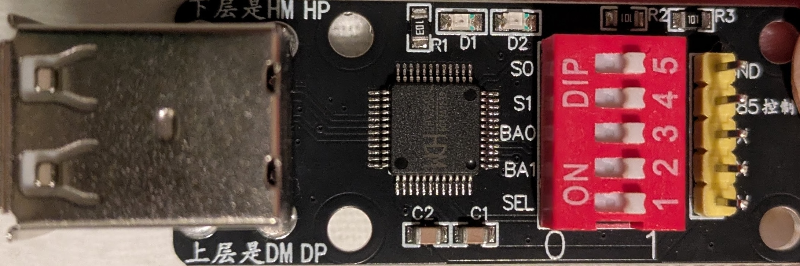
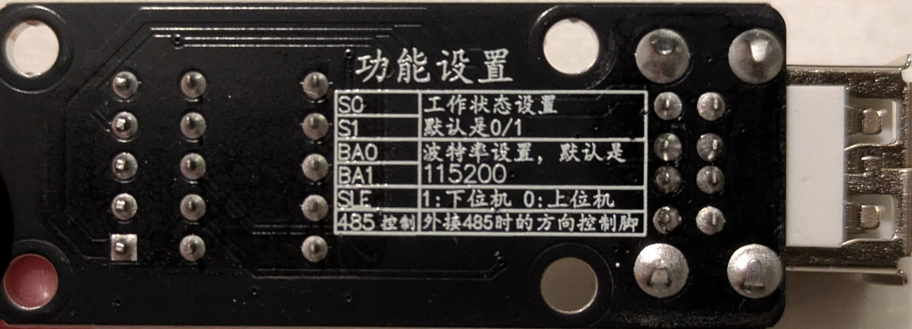

CH9350L User Guide
The CH9350L is a paired-chip USB extender. Unlike the single-chip CH9329, it is designed to operate as a matched pair: a Lower Computer (LC) module (USB host side) and an Upper Computer (UC) module (USB device side). kvm-serial replaces the LC in software, speaking the CH9350L UART protocol directly to a physical UC module, which presents USB HID keyboard and mouse to your target machine.
Protocol reference: CH9350L Protocol Specification
Supported devices overview: Supported Devices
Hardware
What you need
- A CH9350L UC (Upper Computer) module — the end that connects to the target machine
- A short USB-A to USB-A male to male cable to connect the CH9350L module to the target
- A USB-to-UART adapter connecting the UC's serial header to your host computer (e.g. CP2102, CH340, FTDI, or similar at 3.3 V TTL)
- A USB video capture card (optional, for video feed from the remote machine)
Note: You only need the UC board. kvm-serial software replaces the LC. While you don't need two CH9350L modules many sellers only sell them in pairs, and redundancy is sometimes useful.
Sourcing hardware
CH9350L modules are less common than CH9329 cables but are available from eBay and AliExpress. They typically come as small breakout boards with:
- A USB-A connector for the target machine (this is the UC's USB device port)
- A serial/UART header for communication
- Three dipswitches: SEL, S0, S1 (and sometimes BAUD0/BAUD1)
Look for listings describing a "CH9350 KVM extender" or "CH9350L module" breakout board.
Here is an example of a typical CH9350L breakout module (TTL UART variant):

Front: USB-A target connector (left), CH9350L chip (centre), DIP switches S0/S1/BA0/BA1/SEL (right), and serial header
Dipswitch Configuration
This is the most important setup step. The dipswitches on the UC board control its role and working state.

Back silkscreen: 功能设置 (Function Settings) — labels for S0, S1, BA0, BA1, SEL, and 485控制 (RS-485 direction control)
The silkscreen labels translate as:
| Label | Translation |
|---|---|
| S0 | Working state setting |
| S1 | Default is 0/1 |
| BA0 | Baud rate setting, default is |
| BA1 | 115200 |
| SEL | 1: Lower computer (LC) — 0: Upper computer (UC) |
| 485控制 | Direction control pin for external RS-485 connection |
Out of the box, all switches are set to 1 (HIGH). The silkscreen on the front reads 0 and 1 at the ends of the DIP switch block, indicating switch orientation (1 = ON/HIGH, 0 = OFF/LOW).
SEL — Role selection
| SEL | Role |
|---|---|
| 1 (ON) | Lower Computer (LC) — USB host side |
| 0 (OFF) | Upper Computer (UC) — USB device side |
Set SEL = 0 (OFF) to configure the module as a UC. kvm-serial is the LC.
S0 / S1 — Working state
The working state determines what USB HID descriptors the UC presents to the target machine and which UART frame format is used.
| S0 | S1 | State | Description |
|---|---|---|---|
| HIGH | HIGH | 0/1 (default) | Full descriptor handshake — kvm-serial sends HID descriptors over UART |
| LOW | HIGH | 2 | BIOS keyboard + relative mouse (legacy/BIOS compatible) |
| HIGH | LOW | 3 | BIOS keyboard + absolute mouse (recommended for most desktop use) |
| LOW | LOW | 4 | BIOS keyboard + HID Digitizers (multi-monitor absolute positioning) |
Which state should I use?
- State 3 is the recommended starting point for most users controlling a modern desktop OS with an absolute mouse pointer (the cursor goes exactly where you click in the video feed). Because reports carry positions rather than deltas, target-side pointer acceleration has no effect — the cursor lands exactly where the source pointer is in the video feed.
- State 2 is the right choice for BIOS/UEFI setup screens, boot menus, PXE boot, and recovery consoles. Legacy BIOS and UEFI CSM only enumerate USB HID boot-protocol devices with a relative mouse; the absolute-mouse descriptor used in states 3/4 will not enumerate in those environments. The cursor is driven by relative deltas, so target-side pointer acceleration applies (see the troubleshooting note below).
- State 4 is for multi-monitor setups using HID Digitizer absolute positioning.
- State 0/1 is the most advanced option: the UC mirrors descriptors from real USB HID devices. It supports relative mouse only (absolute mouse frames are silently dropped by the UC firmware in this state) and inherits target-side pointer acceleration as a result. Most users should prefer state 3 or 4.
BIOS/UEFI tip: If you need to access the BIOS on the target machine, temporarily switch to state 2 (change S0/S1 and power-cycle the board). You can switch back to state 3 after booting into the OS.
Important: Set S0/S1 on the UC board only. When using kvm-serial as the software LC, only the UC board's dipswitches matter. If you purchased a pair of modules, keep the unused LC board aside as a spare.
BAUD0 / BAUD1 — Baud rate
| BAUD1 | BAUD0 | Baud rate |
|---|---|---|
| 0 | 0 | 115200 (default) |
| 0 | 1 | 57600 |
| 1 | 0 | 38400 |
| 1 | 1 | 9600 |
CH9350L defaults to 115200 bps. You will need to select the correct baud rate for the hardware
in the baud menu in kvm-serial.
Physical Setup
- Set the dipswitch SEL = 0 (UC mode) and choose a working state (S0/S1).
- Connect the UC module's USB-A connector to the target machine.
- Connect the UC module's serial/UART header to your host machine via a 3.3 V USB-to-UART adapter (e.g. CP2102, CH340):
Host PC (USB) ──► USB-to-UART adapter (3.3 V TTL)
│
│ TX ──► RX ┐
│ RX ◄── TX ├─ CH9350L UC module
│ GND ── GND ┘
│
▼
USB-A (target PC)
- Verify the serial port appears on the host:
- macOS/Linux:
/dev/cu.usbserial-XXXXor/dev/ttyUSB0 -
Windows:
COM3,COM4, etc. (check Device Manager → Ports) -
On the target machine, the UC should enumerate as a USB keyboard + mouse device.
Driver installation: If the serial port is not detected, see INSTALLATION.md for platform-specific USB-to-UART driver instructions.
USB port note
The CH9350L module has two USB-A port positions on the target side. The front silkscreen marks them:
- Upper row: DM / DP — this is typically the wired USB port
- Lower row: HM / HP — this may not have signal lines connected on some boards
If the target machine does not enumerate a USB HID device, try the other port. The correct port is the one where the target's keyboard LED indicators (Num Lock, Caps Lock) react when toggled from the host.
RS-485 vs TTL UART
The CH9350L supports both plain TTL UART and RS-485 on the same UART pins.
TTL UART (3.3 V single-ended) — recommended for most kvm-serial setups. Direct wiring to a USB-to-UART adapter (CP2102, CH340, FTDI, etc.) works fine for typical desktop or lab distances. A Raspberry Pi GPIO header can also be wired directly.
RS-485 (differential, half-duplex) — extends the link to tens of metres at 115200 bps, or up to ~1200 m at lower baud rates, using a balanced twisted-pair cable.
⚠ Warning — do not connect RS-485 bus lines directly to the CH9350L.
RS-485 uses differential voltages in the range of −7 V to +12 V. The CH9350L's UART pins are 3.3 V TTL and will be damaged by RS-485 bus voltages. This could even potentially damage the machine you are connecting to, over-volting its USB lines. You must use a separate RS-485 transceiver board (e.g. one based on the MAX485 or SN75176) to convert between the CH9350L's TTL UART and the RS-485 bus.
The CH9350L's TNOW pin (labelled "485控制" / "485 Control" on the board silkscreen) goes
HIGH during transmission. Wire this to the RE/DE direction-control pins of the transceiver
board to switch it between transmit and receive — this is required because RS-485 is
half-duplex. The 0x57 0xAB UART frames are identical over RS-485; no protocol change is
needed in kvm-serial.
For most users, TTL UART is sufficient and requires no additional hardware.
GUI Usage
- Launch the GUI (
python -m kvm_serialor the packaged executable). - Open Options → Protocol and select a CH9350L option.
- CH9350L (state 3, absolute mouse) is recommended for GUI usage.
- Ensure the dipswitches on your hardware match the selected option.
- Open Options → Baud and select 115200 as the default for this chip.
- kvm-serial will automatically perform any startup handshake and begin forwarding keyboard and mouse input.
- Open File → Save Configuration to persist this configuration across restarts.
The GUI will indicate the connection state. For state 0/1, a descriptor handshake occurs on first connect; for states 2/3/4 the UC accepts input frames immediately after the startup sequence.
You can tell the handshake has succeeded when keyboard and mouse input starts working on the target machine. If input does not work after a few seconds, see Troubleshooting below.
Headless / CLI Usage
Use kvm_serial.control with the --ch9350 flag:
# CH9350L in state 3 (absolute mouse — recommended for desktop use)
python -m kvm_serial.control --ch9350 --ch9350-state 3 /dev/cu.usbserial-XXXX
# CH9350L in state 2 (relative mouse — for BIOS/UEFI use)
python -m kvm_serial.control --ch9350 --ch9350-state 2 /dev/cu.usbserial-XXXX
# CH9350L in default state (0/1 — descriptor handshake, relative mouse only)
python -m kvm_serial.control --ch9350 /dev/cu.usbserial-XXXX
# With mouse capture
python -m kvm_serial.control --ch9350 --ch9350-state 3 --mouse /dev/cu.usbserial-XXXX
# For video, use the GUI: python -m kvm_serial
# Verbose logging (useful for diagnosing handshake issues)
python -m kvm_serial.control --ch9350 --verbose /dev/cu.usbserial-XXXX
# Windows COM port
python -m kvm_serial.control --ch9350 --ch9350-state 3 COM3
Run with --help to see all available options.
Troubleshooting
No keyboard or mouse input on the target
The UART link may be healthy while the UC's USB port has not enumerated on the target host. Common causes:
- Wrong USB port on the UC board. The module has two USB-A port positions (DM/DP upper, HM/HP lower); on some boards only one has the signal lines wired. Try the other if you're not having luck with the first.
- Dipswitch mismatch. Ensure SEL = 0 (UC) and S0/S1 match the state you specified with
--ch9350-state. Power-cycle the board after changing dipswitches. - Wrong baud rate selected Check the
BA0/BA1dipswitches from the table above, and the baud rate setting inkvm-serial. These MUST match for the link to work. - Wrong end of the cable. The USB-A connector must go to the target, not the host.
- Target USB port issues. Try a different USB port on the target machine.
Cursor does not move in state 0/1
Absolute mouse is silently dropped by the CH9350L UC firmware in state 0/1. This is a hardware/firmware limitation. Use state 3 or state 4 for absolute mouse positioning.
Cursor lags behind on fast drags (states 0/1, 2)
In states 0/1 and 2 kvm-serial converts the source pointer's absolute position into relative deltas, which means the cursor on the target is driven by the same path as any USB mouse plugged in directly — including the target's pointer acceleration. A slow drag tracks the source faithfully; a fast drag overshoots; a deliberate slow-down lets the source catch up. This is a property of relative-mouse input on accelerated OSes, not a kvm-serial bug.
Mitigations:
- Switch to state 3 if the target supports it. State 3 ships positions rather than deltas so target-side acceleration has no effect.
- Disable target-side pointer acceleration if state 3 isn't an option:
- Windows: Settings → Devices → Mouse → Additional mouse options → Pointer Options → uncheck Enhance pointer precision
- macOS:
defaults write -g com.apple.mouse.scaling -1then log out (no GUI toggle) - Linux: per-DE — typically
xinput set-propfor X11, or the desktop environment's mouse settings panel
Descriptor handshake never completes (state 0/1)
- Run with
--verboseto see handshake progress. - The handshake requires the UC to echo back PID values in its keep-alive (
0x12). If the UC's keep-alive never appears, check baud rate (115200), wiring (TX/RX not crossed?), and that the UART adapter is 3.3 V TTL. - Try a target machine replug: if the handshake completes but input still does not work, unplug and re-plug the USB cable on the target side. kvm-serial will replay the attach sequence automatically.
Serial port not detected on the host
See INSTALLATION.md for USB-to-UART driver installation instructions.
On Linux, add your user to the dialout group: sudo usermod -a -G dialout $USER (then log
out and back in).
Further Reading
- CH9350L Protocol Specification — full frame format, state machine, attach sequence, and worked examples
- MODES.md — keyboard capture mode comparison
- INSTALLATION.md — platform-specific driver and permission setup
- SUPPORTED_DEVICES.md — comparison of CH9329 and CH9350L